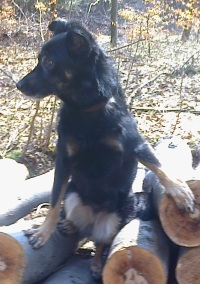
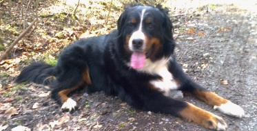

O dogoterapii
Co to jest dogoterapia?
Dogoterapia to metoda wzmacniająca efektywność np. rehabilitacji, w której motywatorem jest odpowiednio wyselekcjonowany i wyszkolony pies, prowadzony przez wykwalifikowanego terapeutę. Terapia tego rodzaju jest jedną z dziedzin zooterapii.
Do kogo skierowane są zajęcia?
Osoby najczęściej korzystające z dogoterapii to:
-
dzieci w normie intelektualnej w ramach realizacji programów edukacyjnych szkół i
przedszkoli;
-
dzieci z problemami z nauce (czytanie, dodawanie...)
-
osoby z zaburzeniami rozwoju i niepełnosprawnościami;
-
osoby mające problemy z funkcjonowaniem w otoczeniu;
-
osoby samotne
Informacje o zajęciach
Kto prowadzi zajęcia?
Zajęcia prowadzone są przez pedagoga posiadającego uprawnienia do prowadzenia zajęć z zakresu nauczania przedszkolnego i wczesnoszkolnego, rewalidacji oraz resocjalizacji.
Zajęcia prowadzone są wg standardów:
AAA (Animal Assisted Activites - zajęcia z udziałem zwierząt),
AAE (Animal Assisted Education - edukacja z udziałem zwierząt)
AAT (Animal Assisted Therapy - terapia z udziałem zwierząt).
W zajęciach dogoterapii powinny brać udział osoby, które są zainteresowane takimi spotkaniami i mają pozytywny (nieagresywny) stosunek do psów, ponieważ zajęcia nigdy nie powinny odbywać się ze szkodą dla psa. Powinny za to uwzględniać charakter, predyspozycje i możliwości psa.
Plan zajęć
Organizacja zajęć edukacyjnych i terapeutycznych:
Zajęcia dogoterapii mogą odbywać się zarówno indywidualnie jak i w grupach.
Możliwe jest indywidualne dostosowanie toku zajęć (np. ich częstotliwości) z uwzględnieniem możliwości psa.
Zajęcia w placówkach
| Przedział wiekowy dzieci |
Czas trwania zajęć/rodzaj zajęć |
Ilość osób w grupie |
| Dzieci „żłobkowe” (do lat 3) |
Zajęcia z udziałem psa 15min – 0,5 godz. |
2-4 osób + opiekun |
| Dzieci „przedszkolne” (4-5) |
- Zajęcia z udziałem psa 1 godz.
- Zajęcia edukacyjne 0,5 godz.
|
- 5-10 osób + opiekun
- 5 osób + opiekun
|
| Dzieci „wczesnoszkolne” (klasy 1-3) |
- Zajęcia z udziałem psa 1 godz.
- Zajęcia edukacyjne 1 godz.
|
- 4-15 osób + nauczyciel
- 4-15 osób + nauczyciel
|
Osoby upośledzone umysłowo
- głęboko
- znacznie
- umiarkowanie
- lekko
|
Zajęcia terapeutyczne
- 0,5 godz.
- 0,5 godz.
- 0,5 godz.
- 0,5 - 1 godz.
|
- 2-4 osób + opiekun dla każdej osoby
- 2-4 osób +opiekun/-owie
- 2-4 osób +opiekun/-owie
- 2-6 osób +opiekun/-owie
|
Zajęcia w placówkach
| Przedział wiekowy dzieci |
Czas trwania zajęć |
Ilość osób w grupie |
| Dzieci „żłobkowe” (do lat 3) |
0,5 godz. |
5 osób + rodzice |
| Dzieci „przedszkolne” (4-5) |
0,5 - 1 godz. |
5-6 osób + rodzice |
| Dzieci „wczesnoszkolne” (klasy 1-3) |
1 godz. |
5-10 osób |
| Osoby upośledzone umysłowo |
0,5 godz. |
1-3 osoby + opiekun do każdej osoby |
Pieski: Neda i Wiki
|
Wiki – kundelek
Suczka delikatnej budowy ciała, która bardzo lubi wykonywać „sztuczki”. Zapewnia sobie nimi zainteresowanie i podziw ze strony najmłodszych. Potrafi zachęcić do współpracy nawet najbardziej nieśmiałych uczestników zajęć.
|

|
|

|
Neda – Berneński pies pasterski
Pogodna suczka lubiąca towarzystwo ludzi. Cierpliwia i budząca zainteresowanie ze względu na swój charakterystyczny dla rasy dostojny wygląd. Budzi ciekawość nawet wśród osób nie należących do psich wielbicieli.